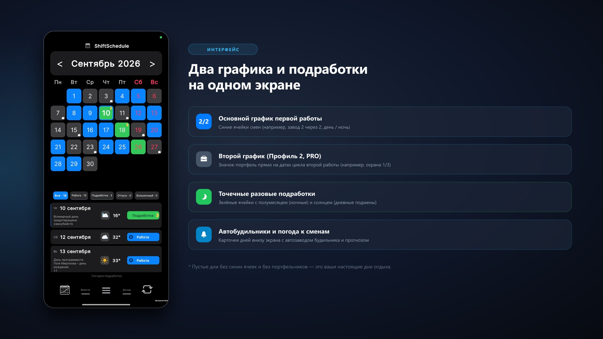

Совмещение двух работ со сменным графиком — частая реальность в наше время. Операторы производств берут дежурства в охране, медсёстры совмещают больницу и частные клиники, а работники складов подрабатывают курьерами или в такси.
Главная сложность такого ритма — не физическая нагрузка, а постоянный хаос в расписании. Когда каждый график живёт по собственному скользящему циклу (например, 2/2 и сутки через трое), бумажные блокноты и стандартные календари быстро перестают справляться.
В этой статье разберём, как организовать учёт двух независимых графиков на одном смартфоне, избежать накладок смен и находить дни настоящего отдыха.
Почему стандартные календари не подходят для двух сменных работ
Обычные мобильные календари (Google Календарь, Яндекс Календарь) создавались для пятидневной рабочей недели. При попытке внести туда два скользящих графика возникают три проблемы:
- Отсутствие циклического алгоритма: стандартный календарь умеет повторять события «каждую неделю» или «каждый месяц». Но если смена выпадает через 3 или 4 дня, её приходится высчитывать и вносить вручную.
- Накладки и визуальная перегрузка: если вбить 80–100 смен на два месяца вперёд, экран превращается в сплошное цветное полотно, где рабочие смены первой работы перемешаны со сменами второй и личными делами.
- Невозможность быстрого пересчёта: если на одной работе график сдвинулся из-за больничного или ремонта цеха, в обычном календаре приходится вручную переносить десятки будущих событий.
Решение: два независимых профиля в приложении ShiftSchedule
В приложении ShiftSchedule (Календарь смен) для совмещения работ предусмотрена функция «Второй график» (Профиль 2, PRO).
Она добавляет к основному расписанию отдельный цикл подработки, который отображается значком прямо на той же сетке — не нужно держать в голове два разных календаря:

Базовый календарь, будильники и подмены — бесплатны. «Второй график» входит в PRO-функционал, но в приложении есть 14-дневный пробный период, чтобы спокойно всё настроить и проверить на своих сменах.
Как настроить два графика
-
1Основной профиль: настройте цикл первой работы (время начала и окончания смены, время на дорогу, цвет ячеек).
-
2Второй график: в настройках перейдите в «Мои графики», добавьте второй профиль и задайте его цикл — сколько дней работаете, сколько отдыхаете, от какой даты отсчитывать. Отдельные дни можно точечно поправить вручную.
-
3Значок на календаре: дни подработки отмечаются значком-портфелем прямо на сетке основного графика — включается опцией «Показывать в основном графике».
Как находить «настоящие» выходные дни
При совмещении двух сменных графиков самая частая ошибка — считать «выходным» день между сменами, в который на самом деле стоит дежурство на второй работе.
Когда оба графика оцифрованы в приложении, значок подработки на календаре сразу подсказывает, где реально свободно:
- День без основной смены и без значка подработки — это и есть настоящий день тишины, который можно смело бронировать под сон и семью.
- День с основной сменой и значком подработки рядом — сигнал заранее спланировать переезд между работами, а не полагаться на память после смены.
Облачный бэкап и надёжность данных
Оба профиля автоматически синхронизируются с облачным аккаунтом. Если телефон разрядится, потеряется или вы смените устройство, все графики, заметки и настройки будильников мгновенно восстанавливаются в первоначальном виде.
FAQ: Часто задаваемые вопросы
Можно ли настроить будильник под смену на подработке?
Умный будильник в приложении привязан к основному графику. Для второго графика отдельного будильника нет — но благодаря значку-портфелю на календаре вы заранее видите день подработки и можете сами поставить будильник на нужное время.
Что делать, если на одной работе график сдвинулся?
Достаточно воспользоваться функцией точечной замены: переопределите один конкретный день или сдвиньте якорную дату цикла — расписание автоматически пересчитается вперёд на весь год.
Работает ли приложение без интернета?
Да, ShiftSchedule полностью автономен и хранит все графики локально на устройстве. Интернет требуется только для облачной синхронизации.
Учёт смен бригады и отчёты для руководства
Если помимо личного календаря смен вам требуется вести табель отработанного времени, фиксировать часы и выработку сотрудников или отправлять сменные отчёты руководству — используйте наше специализированное приложение Табель: Учёт смен и бригад.
ShiftSchedule — бесплатно для Android
Настройте два независимых сменных графика за пару минут. Синхронизация с облаком, будильники под смены, значок подработки прямо в календаре.
Скачать в RuStore Скачать на GitHub